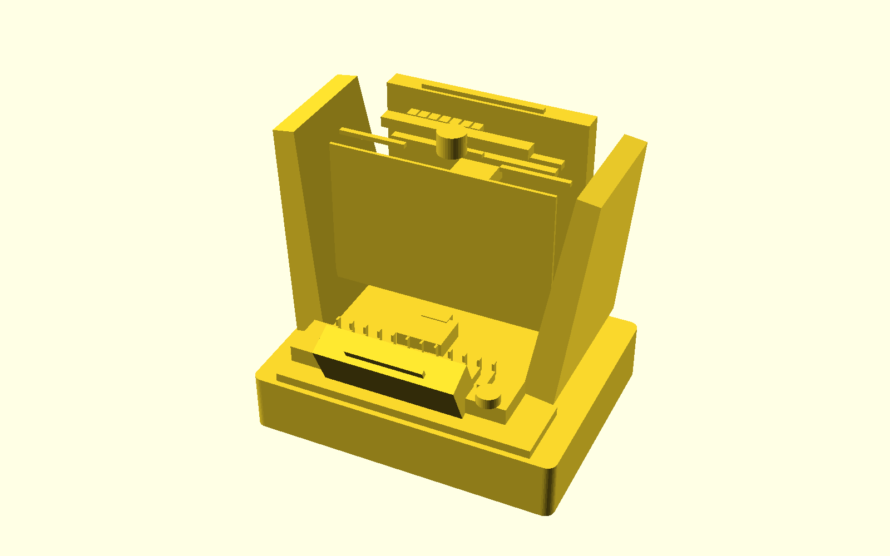
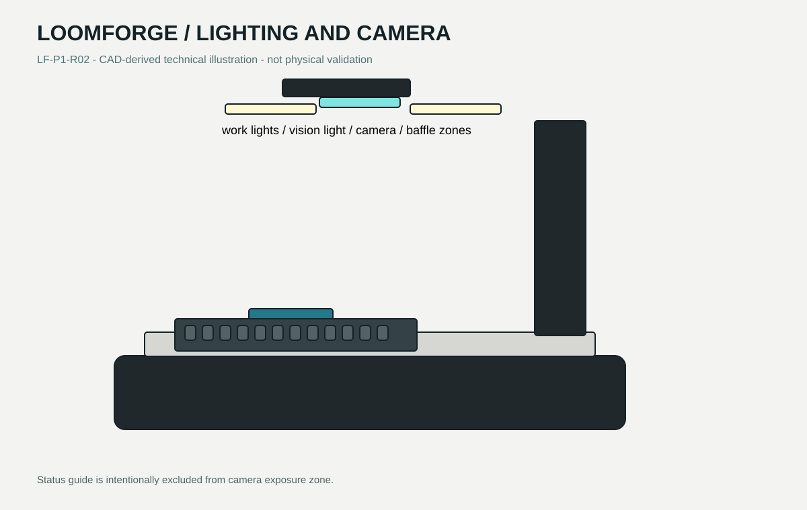

Manually indexed 12-slot wire tray, slack combs, and a dowel-located connector cartridge stay accessible at the front.
LF-P1-R02 / DEVELOPMENT DESIGN
Visible precision for small-batch harness assembly.
A proposed supervised workstation for guided insertion of pre-crimped terminals, connection mapping, and traceable engineering records.

SELECTED CONFIGURATION
A compact workcell built around the actual insertion path.
Clear guarded chamber exposes the X/Y/Z insertion head, force mount, camera, and task lighting without turning the machine into a generic enclosure.
Graphite spine carries rails, cable chain, lighting, and service routing; warm light-gray folded supports form the load path.
SUPERVISED WIRE CYCLE
Presentation is manual. Motion is bounded. Results remain traceable.
- 01 Open the interlocked guard; place labelled pre-crimped lead terminal-forward in its indexed slot.
- 02 Route slack through passive combs and close the guard. Recipe, fixture, and calibration are validated.
- 03 The compact head grips insulation, captures the terminal in a keyed guide, and approaches the selected cavity.
- 04 Controlled insertion monitors force and travel. A split guide opens for release; no blind retry is used.
- 05 Mating/far-end test checks connection mapping; operator removes the assembly after the guarded cycle.
FUNCTIONAL LIGHTING
Illumination has three jobs.
Diffuse neutral-white work light supports loading. A separately baffled vision zone is reserved for inspection. A restrained status guide is paired with text and physical indicators; lighting is not a safety system.

ENGINEERING PACKAGE
Designed for review, fabrication planning, and manufacturer-led validation.
Included now
- Parametric OpenSCAD source and generated STL
- Mechanical part register and preliminary BOM
- Simulation, recipes, reports, and state/fault tests
- Research, safety, manufacturing, and validation documentation
Shareable media kit
{kind=link}
{kind=link}
{kind=link}
WHAT REMAINS UNVERIFIED
Conceptual geometry and synthetic data are not hardware evidence.
Critical blockers include controlled connector dimensions, guide geometry trials, tolerance stack release, purchased motion/safety hardware selection, electrical release, and a manufacturer-led safety and validation program.
Read unresolved items